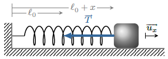

Le pendule élastique est un système constitué d’un ressort de masse négligeable dont une
extrémité est fixée et auquel on a attaché une masse ponctuelle \(m\) libre de se mouvoir.
Le ressort a pour constante de raideur \(k\) et une longueur à vide \(\ell_0\). De plus,
nous supposons que la masse est astreinte à se déplacer suivant un axe horizontal sans
frottement. On a alors un système à un degré de liberté qui est amené à osciller comme nous
allons le démontrer.
Équation du mouvement
Dans le référentiel d’étude considéré galiléen, la force de pesanteur est compensée par la
réaction du support.
La tension du ressort produit une force de rappel :
$$
\quad \overrightarrow{T} = - k (\ell - \ell_0) \overrightarrow{u_x}
$$
où \(\ell\) désigne la longueur du ressort.
La position d’équilibre correspond donc à une longueur \(\ell_{eq}=\ell_0\). On désigne par
\(x=\ell-\ell_{eq}\) l’allongement du ressort par rapport à la situation au repos. Dans ce
cas, on a :
$$
\quad \overrightarrow{T} = - k x \overrightarrow{u_x}
$$

Pendule élastique.
Le principe fondamental de la dynamique donne :
$$
\quad m\frac{\mathrm{d}^2x}{\mathrm{d}t^2} = -kx
$$
On en déduit l’équation différentielle du mouvement :
$$
\quad \boxed{ \ddot{x} + {\omega_0}^2x = 0 \quad / \quad \omega_0 = \sqrt{\frac{k}{m}} }
$$
Il s’agit de l’équation caractéristique d’un oscillateur harmonique.
Remarquons les propriétés suivantes :
L’équation du mouvement est invariante par la transformation \(t \mapsto -t\) qui
traduit la réversibilité du phénomène.
On note également une invariance par la transformation \(x \mapsto -x\) ce qui
signifie que les oscillations sont symétriques autour de la position d’équilibre.
L’analyse dimensionnelle de l’équation montre que \([\omega_0] = T^{-1}\) : il
existe donc une durée de l’ordre de \(1/\omega_0\) qui est caractéristique du phénomène
d’oscillation.
La solution de l’équation différentielle s’écrit :
$$
\quad x(t) = A\cos\left( \omega_0 t + \varphi \right)
$$
Avec \(A\) et \(\varphi\), deux constantes d’intégration que l’on obtient grâce à deux
conditions initiales.
Si on écarte le système de sa position d’équilibre \(x =0\), il se met à osciller avec une
amplitude \(A\) et à une fréquence, dite fréquence propre :
$$
\quad \boxed{ \nu_0 = \frac{\omega_0}{2\pi} = \frac{1}{2\pi}\sqrt{\frac{k}{m}} }
$$
Notons que la fréquence propre dépend des caractéristiques du pendule élastique (\(k\) et
\(m\)) mais non de l’amplitude des oscillations : on parle d’isochronisme des
oscillations.
Oscillations harmoniques.
Aspects énergétiques
Du point de vue énergétique, cet oscillateur transforme l’énergie élastique en énergie
cinétique et vice versa. L’énergie potentielle élastique vaut :
$$
\quad \mathcal{E}_p = \frac{1}{2}kx^2 = \frac{1}{2}kA^2\cos^2(\omega_0 t +\varphi)
$$
L’énergie cinétique vaut :
$$
\quad \mathcal{E}_c = \frac{1}{2}m\dot{x}^2 = \frac{1}{2}kA^2\sin^2(\omega_0 t +\varphi)
$$
L’énergie mécanique du pendule élastique vaut :
$$
\quad \mathcal{E}_m = \mathcal{E}_c + \mathcal{E}_p = \frac{1}{2}kA^2
$$
Cette énergie reste constante puisque les forces qui travaillent sont conservatives.
Pendule élastique amorti
Mise en équation
En réalité, la présence des frottements dissipe l’énergie initialement fournie à
l’oscillateur. On assiste alors à un phénomène d’amortissement qui se caractérise :
soit par une diminution de l’amplitude des oscillations au cours du temps
soit par un retour à l’équilibre sans oscillation
La modélisation des forces de frottement est plus ou moins complexe.
Pour des frottements de type visqueux, on choisit généralement, en première approximation,
un modèle de frottement linéaire en vitesse : \(f=-\alpha v\). Parfois une
modélisation plus réaliste exige d’utiliser un modèle quadratique du type \(f=-\alpha
\left|v\right|\) ce qui présente l’inconvénient de donner une équation différentielle non
linéaire.
Pour des frottements solides, on utilisera les
lois d’Amontons-Coulomb sur le frottement.
Nous nous contenterons ici de traiter le pendule élastique en présence de frottements
visqueux modélisés par \(f=-\alpha \dot x\) où \(\alpha\) désigne le coefficient de
frottement. L’équation du mouvement s’écrit :
$$
\quad m\ddot{x} + \alpha \dot x + k x =0
$$
si l’on pose :
$$
\quad \sqrt{\frac{k}{m}} \, [\mathrm{rad.s^{-1}}]
$$
et
$$
\quad 2\lambda = \frac{\alpha}{m} \, [\mathrm{s^{-1}}]
$$
elle devient :
$$
\quad \boxed{ \ddot{x} + 2\lambda \dot x + {\omega_0}^2 x =0 }
$$
C’est l’équation caractéristique d’un oscillateur harmonique linéairement amorti. Par
rapport à l’oscillateur harmonique on note la présence d’un terme supplémentaire
\(2\lambda \dot x\) que l’on appelle terme dissipatif car à l’origine de la dissipation
d’énergie. Le coefficient \(\lambda\) est appelé coefficient d’amortissement, et l’analyse
dimensionnelle de l’équation montre qu’il est homogène à l’inverse d’un temps. Nous verrons
ultérieurement que ce temps représente l’ordre de grandeur du temps d’amortissement des
oscillations (quand il y en a). In fine, le comportement d’un oscillateur harmonique
linéairement amorti est complètement décrit par la donnée de \(\omega_0\) et \(\lambda\).
Quelques remarques sur l’équation :
On retrouve l’oscillateur harmonique lorsque \(\lambda \to 0\). Plus \(\lambda\) est
petit, moins l’oscillateur est amorti.
L’équation du moivement n’est plus invariante par la transformation \(t \mapsto -t\),
ce qui traduit un phénomène irréversible.
La physique de cet oscillateur est caractérisée par deux temps
caractéristiques : \(1/\lambda\) donne l’ordre de grandeur de l’amortissement
alors que \(1/\omega_0\) donne celui de la durée entre deux oscillations.
Régime libre
L’équation caractéristique d’un oscillateur harmonique linéairement amorti admet des
solutions de la forme \( x(t) = A\rm{e}^{rt}\).
\(r\) doit vérifier l’équation caractéristique du second degré :
$$
\quad r^2 + 2\lambda r + {\omega_0}^2 = 0
$$
dont le discriminant est \(\Delta = 4(\lambda^2-{\omega_0}^2)\). Suivant le signe du
discriminant, on distingue trois régimes différents.
Dans ce cas, le discriminant de l’équation caractéristique est négatif et les racines sont
complexes :
$$
\quad r = - \lambda \pm \mathrm{i}\omega \quad / \omega^2 = {\omega_0}^2 - \lambda^2
$$
La solution réelle est donc de la forme :
$$
\quad x(t) = A\mathrm{e}^{-\lambda t}\cos(\omega t + \varphi)
$$
Oscillations en régime pseudo-périodique.
L’oscillateur oscille avec une amplitude qui s’amortie exponentiellement au cours du temps.
Puisque l’amplitude diminue au cours du temps, on ne peut plus parler de phénomène
périodique. Cependant, il est d’usage de définir la durée \(T\) entre deux maxima
successifs, qui est aussi la période de \(\cos(\omega t + \varphi)\). Cette durée \(T\) est
appelée pseudo-période et vaut :
$$
\quad T = \frac{2\pi}{\omega} = \frac{2\pi}{\sqrt{{\omega_0}^2 - \lambda^2}}
$$
Là encore, la pseudo-période est indépendante de l’amplitude initiale. Toutefois on notera
l’influence des frottements qui se traduit par une augmentation de la pseudo-période à
mesure que \(\lambda\) augmente.
L’énergie mécanique décroit au cours du temps. Cela s’explique par la dissipation des forces
de frottement et la décroissance vérifie l’équation d’évolution :
$$
\quad \frac{\mathrm{d}\mathcal{E}_m}{\mathrm{d}t} = - \alpha \dot{x}^2 \leq 0
$$
Évolution de l’énergie mécanique en régime pseudo-périodique.
Régime critique : \(\lambda = \omega_0\)
Le discriminant de l’équation caractéristique est nulle et la racine est double :
$$
\quad r = -\omega_0
$$
La solution s’écrit alors
$$
\quad x(t) = (A + Bt)\mathrm{e}^{-\omega_0 t}
$$
Oscillateur en régime critique.
L’oscillateur atteint l’équilibre sans osciller (on dit qu’il n’ y a pas dépassement).
Régime apériodique : \(\lambda \gt \omega_0\)
Le discriminant de l’équation caractéristique est positif et les solutions sont
réelles :
$$
\quad r_{\pm} = - \lambda \pm \sqrt{ \left( \lambda^2 - {\omega_0}^2 \right)} \lt 0
$$
La solution est donc
$$
\quad x(t) = A\mathrm{e}^{r_+ t} + B\mathrm{e}^{r_- t}
$$
Les deux racines étant négatives, les deux exponentielles décroissent :
l’oscillateur atteint l’équilibre sans osciller et d’autant plus lentement que
l’amortissement est fort.
Finalement, on retiendra les idées simples suivantes : plus l’amortissement est
important et moins il y a d’oscillations. Un oscillateur perturbé, oscillera si le
coefficient d’amortissement est inférieur à un certain seuil.
Résonances
Certains systèmes présentent, lorsqu’ils sont soumis à une excitation sinusoïdale, une
réponse maximale pour une ou plusieurs fréquences caractéristiques (les modes propres). On
parle de résonance et ces systèmes sont appelés résonateurs. L’oscillateur harmonique est un
exemple de résonateur à un mode propre, car il présente un seul degré de liberté.
Généralités
Reprenons commeexemple le pendule élastique. Soumettons l’autre extrémité du ressort à un
déplacement sinusoïdal \(a\cos(\omega t)\) de fréquence \(\nu=\omega/2\pi\) connue.
Supposons la présence de frottements visqueux que l’on modélisera par une force
\(f_x = - \alpha \dot{x}\).
Pendule élastique soumis à une excitation sinusoïdale.
La relation fondamentale de la dynamique projetée suivant l’axe horizontal donne
$$
\quad m \ddot{x} = - k(\ell - \ell_0) - \alpha \dot{x}
$$
Fixons l’origine des \(x\) à la position de repos du régime libre. On a donc
\( a \cos(\omega t ) + \ell = \ell_0 + x\) d’où l’équation du mouvement
$$
\quad \ddot{x} + \frac{\alpha}{m}\dot{x} + \frac{k}{m}x = \frac{ka}{m}\cos(\omega t )
$$
équation de la forme
$$
\quad \boxed{
\underbrace{\ddot{x} + 2 \lambda \dot{x} + {\omega_0}^2x }_{\rm{oscillateur}}
= \underbrace{ {\omega_0}^2a\cos(\omega t )}_{\rm{excitation}} }
$$
avec \(\omega_0\) la pulsation propre et \(\lambda\) le coefficient d’amortissement.
Il s’agit d’une équation différentielle linéaire avec un second membre sinusoïdal dont la
solution se décompose en deux termes.
La solution particulière, s’exprime comme un signal sinusoïdal de pulsation
\(\omega\) ; c’est le régime forcé.
La solution de l’équation homogène, c’est le régime transitoire. On a vu qu’il y a
trois régimes distincts selon la valeur de \(\lambda\). Dans tous les cas réalistes, la
présence de termes dissipatifs même faibles en traîne la
disparition du régime transitoire (d’où son nom). Passé ce délai, seul persiste le régime
sinusoïdal forcé.
Dans toute la suite, nous supposons que le régime transitoire est complètement dissipé et
que seul persiste le régime forcé :
$$
\quad x(t)t = a_1 \cos(\omega t) + a_2 \sin( \omega t ) \quad t \gg \tau_{amortissement}
$$
Solution en régime forcé
Il s’agit ici de déterminer les expressions des amplitudes \(a_1\) et \(a_2\) en fonction
de la pulsation \(\omega\). La méthode classique consiste à remplacer \(x(t)\) par
\( a_1 \cos( \omega t ) + a_2 \sin( \omega t )\) dans l’équation différentielle pour en
déduire les valeurs de \(a_1\) et \(a_2\) :
$$
\quad \cos(\omega t)\left[ a_1({\omega_0}^2 - \omega^2) + 2 \lambda \omega a_2 \right]
+ \sin(\omega t)\left[ a_2({\omega_0}^2 - \omega^2) + 2 \lambda \omega a_1 \right]
= {\omega_0}^2 a \cos(\omega t)
$$
d’où l’on tire deux équations
$$
\quad \left\{ \begin{aligned}
a_1({\omega_0}^2 - \omega^2) + 2 \lambda \omega a_2 & = {\omega_0}^2 a \\
a_2({\omega_0}^2 - \omega^2) + 2 \lambda \omega a_1 & = 0
\end{aligned} \right.
$$
Ce système d’équations a pour solution
$$
\quad \left\{ \begin{aligned}
a_1 & = a \frac{{\omega_0}^2({\omega_0}^2-\omega^2)}
{({\omega_0}^2-\omega^2)^2 + (2 \lambda \omega)^2} \\
a_2 & = a \frac{2 \lambda \omega {\omega_0}^2}
{({\omega_0}^2-\omega^2)^2 + (2 \lambda \omega)^2}
\end{aligned} \right.
$$
En général, on préfère écrire les solutions harmoniques sous la forme
\(A\cos(\omega t + \varphi) \). En utilisant l’identité
$$
\quad a_1 \cos(\omega t) + a_2 \sin( \omega t ) = A \cos(\omega t + \varphi )
$$
avec
$$
\quad \left\{ \begin{aligned}
A & = \sqrt{{a_1}^2+{a_2}^2} \\
\tan \varphi & = - \frac{a_2}{a_1}
\end{aligned} \right.
$$
l’élongation s’écrit finalement \(x(t)=A\cos(\omega t + \varphi) \) avec
$$
\quad A = \frac{a{\omega_0}^2}{\sqrt{({\omega_0}^2-\omega^2)^2 + (2 \lambda \omega)^2}}
$$
et
$$
\quad \tan \varphi = \frac{2\lambda\omega}{\omega^2 - {\omega_0}^2}
$$
Résonance d’élongation
Étudions maintenant l’évolution de l’amplitude des oscillations en fonction de la
fréquence imposée par l’excitation.
Si l’amortissement est suffisamment faible, l’amplitude des oscillations passe par un
maximum : c’est la résonance en élongation. On montre que :
la pulsation de résonance vaut \(\omega_r = \sqrt{{\omega_0}^2-2\lambda^2}\)
la résonance n’a donc lieu que si le coefficient d’amortissement est en dessous d’un
certain seuil : \(\lambda \lt \frac{\sqrt{2}}{2}\omega_0= \lambda_0\)
si \(\lambda \ll \lambda_0\), la fréquence de résonance s’identifie avec la fréquence
propre : \(\omega_r \simeq \omega_0\)
plus l’amortissement est faible plus la résonance est aigüe
lorsque \(\lambda=\lambda_0\), l’amplitude des oscillations vaut \(a\) sur une grande
plage de fréquence (à basse fréquence), ce qui confère au ressort un comportement
identique à celui d’une tige rigide
si \(\lambda \gt \lambda_0\), le phénomène de résonance disparaît
Réponse fréquentielle de l’amplitude d’un oscillateur vis à vis d’une excitation
sinusoïdale.
L’amplification des oscillations d’élongation à la résonance peut être à l’origine d’effets
néfastes comme la destruction d’habitations suite à un séisme. Elle peut aussi être
recherchée pour construire des appareils sensibles à l’instar des sismographes.
Aspects énergétiques
Pour entretenir les oscillations d’un oscillateur harmonique il faut fournir de l’énergie
comme nous allons le montrer et ceci, d’autant plus que les frottements sont importants.
Reprenons l’étude du pendule élastique mis en mouvement par une excitation harmonique, en
considérant le système {ressort + masse}. Ce système est soumis à deux forces
extérieures :
La force \(\overrightarrow{f_{op}}\) qu’exerce l’opérateur pour entretenir le forçage
sinusoïdal.
La force de frottement \(\overrightarrow{f}=-\alpha\dot{x}\overrightarrow{u_x}/) qui
agit sur la masse.
Forces extérieures agissant sur le système masse-ressort.
Les forces de tension élastique sont conservatives et internes au système. En vertu du
théorème de l’énergie mécanique, on a
$$
\quad \frac{\mathrm{d}\mathcal{E}_m}{\mathrm{d}t} = \mathcal{P}^{nc}
= \mathcal{P}_{\mathrm{op}} + \mathcal{P}_{\mathrm{frottement}}
$$
où \(\mathcal{P}_{\mathrm{op}}\) représente la puissance fournie par l’opérateur, et
\(\mathcal{P}_{\mathrm{frottement}}\) celle de la force de frottement.
Prenons la moyenne de cette relation sur une période
$$
\quad \overline{\mathcal{P}}_{\mathrm{op}} + \overline{\mathcal{P}}_{\mathrm{frottement}}
= \overline{\frac{\mathrm{d}\mathcal{E}_m}{\mathrm{d}t}} = 0
$$
Ce qui traduit le fait, qu’en moyenne, l’opérateur doit fournir de l’énergie pour compenser
la dissipation d’énergie par les frottements.
Poursuivons notre calcul. La force de frottement développe une puissance moyenne
$$
\quad \overline{\mathcal{P}}_{\mathrm{frottement}}
= \overline{\overrightarrow{f}\cdot\overrightarrow{v}}
= - \alpha \overline{ \dot{x}^2 }
$$
En régime sinusoïdal forcé, on a trouvé
$$
\quad x(t) = A\cos\left( \omega_0 t + \varphi \right)
$$
soit
$$
\quad \dot{x} = -A\omega\sin( \omega t + \varphi )
$$
In fine, le dispositif excitateur fournit une puissance moyenne
$$
\quad \overline{\mathcal{P}}_{\mathrm{op}} =
\alpha A^2 \omega^2 \underbrace{\overline{\sin^2( \omega t + \varphi )}}_{1/2}
= \frac{1}{2} \alpha A^2 \omega^2
$$
En régime sinusoïdal forcé, la puissance moyenne fournie par le dispositif excitateur est
proportionnelle au carré de l’amplitude de vitesse \(V=A\omega\) et au coefficient de
frottement.
La puissance fournie obéit également à un phénomène de résonance. En effet, en remplaçant
\(A\) par son expression, on trouve
$$
\quad \overline{\mathcal{P}}_{\mathrm{op}} =
\frac{1}{2} \alpha {\omega_0}^4 a^2
\frac{\omega^2}{({\omega_0}^2-\omega^2)^2 + (2 \lambda \omega)^2}
$$
En divisant le numérateur et le dénominateur par \((2 \lambda \omega)^2\) et en remplaçant
\(\alpha\) par \(2m\lambda\), on obtient
$$
\quad \overline{\mathcal{P}}_{\mathrm{op}} =
\frac{\mathcal{P}_{\mathrm{max}}}
{1 + \left( \frac{{\omega_0}^2-\omega^2}{2 \lambda \omega} \right)^2}
$$
avec
$$
\quad \mathcal{P}_{\mathrm{max}}
= \frac{1}{4}\frac{{m\omega_0}^4a^2}{\lambda}
$$
Évolution fréquentielle de la puissance absorbée par l’oscillateur.
Cette puissance évolue suivant une courbe en cloche. On observe un phénomène de résonance
lorsque \(\omega=\omega_0\) et le maximum est d’autant plus important quel’amortissement est
faible.